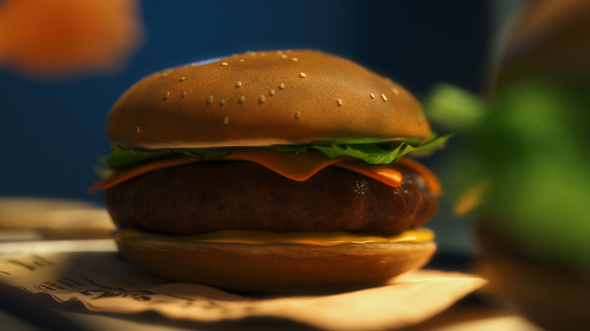
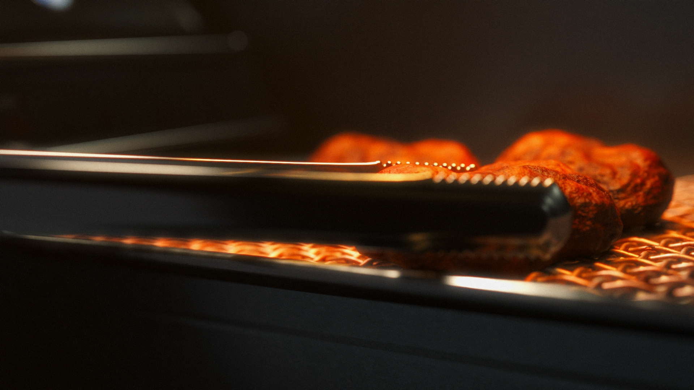
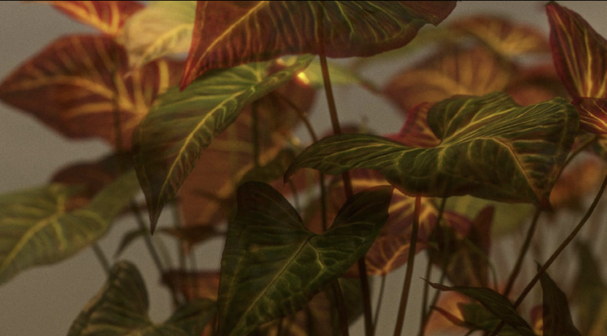

Sweet, warm and colourful; Honeydew is an animated short film borne out of
love for the series The Bear.
The sequence reworks an excerpt from episode 4 of the second season: Marcus has arrived in Copenhagen with the aim of improving his pastry-making skills ahead of the opening of the new restaurant in Chicago.
To the notes of Tezeta, we see the character exploring the streets and restaurants of the city in a blend of colours and flavours that stir in the viewer the same warmth and passion we see in Marcus.
Visit our website for more details
The sequence reworks an excerpt from episode 4 of the second season: Marcus has arrived in Copenhagen with the aim of improving his pastry-making skills ahead of the opening of the new restaurant in Chicago.
To the notes of Tezeta, we see the character exploring the streets and restaurants of the city in a blend of colours and flavours that stir in the viewer the same warmth and passion we see in Marcus.
Visit our website for more details





